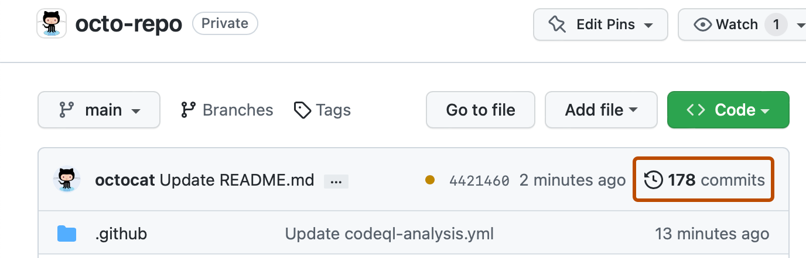
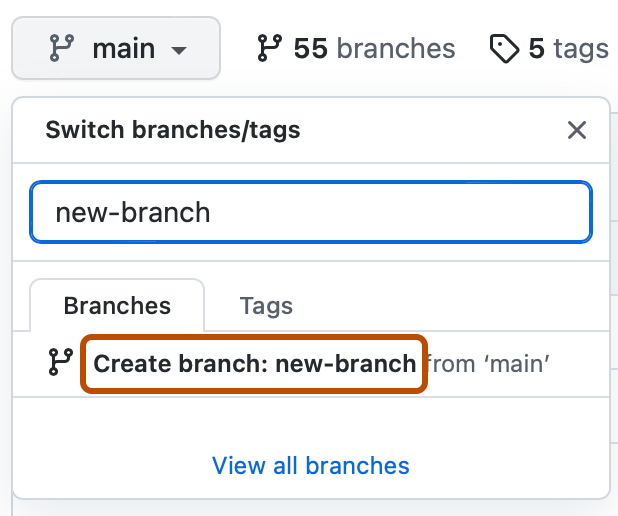
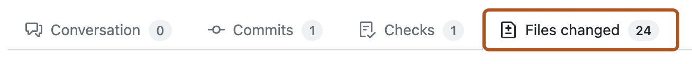
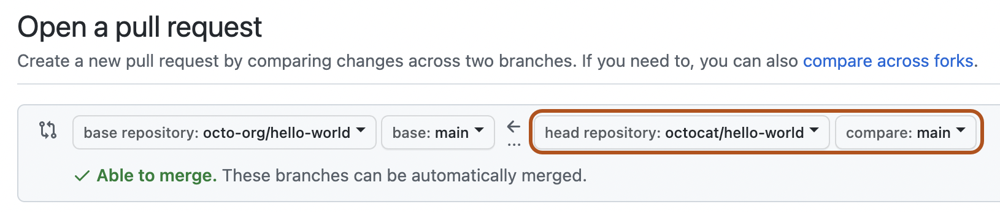
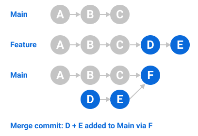

GitHub from Scratch
Make a change. Propose it. Build on each other's work.
2 hours, including a 10-minute break
No coding or command line required
Space or → to advance. Esc for an overview. S for speaker notes.
How did GitHub build GitHub without GitHub?

Git already existed. GitHub isn't required to use it.
Git and GitHub are different
Works offline, without GitHub
Discussion and review online
Today: GitHub in the browser. It creates Git commits behind the scenes.
A very short history
for Linux development
and collaboration
Today's finish line
- Create a repository and record changes
- Find and explain what changed
- Propose and accept an update in your own project
- Exchange an update with another person
One fictional cafe handbook throughout. We'll name each new concept when we need it.
Our two-hour route
First: 55 min
- Welcome and safe practice: 15
- Account setup: 5
- Create repository: 5
- Edit/add and commit: 10
- History and correction: 10
- Independent edit / catch-up: 10
Then: 55 min
- Own-project proposal and merge: 20
- Slack links and assignments: 5
- Contribute to each other: 20
- Verify, questions, reflection: 10
10-minute break between the two parts.
Choose how to learn
- Listen to the task and its completion check
- Start on your own, or watch the short live demo
- Use the task slide while you work; ask for help
The demo is optional. The time shown includes it.
We'll leave the instructions up before moving on.
Task slides: navikt.github.io/github-workshop/
Think first, then share
What file would you like to update more confidently?
Take a quiet minute. Sharing is optional. Ask for help at any point.
Private is not a promise of secrecy
Would it be harmful if this became public?
If yes, stop. Check your organization's rules and get guidance before uploading.
This applies to private and internal repositories too.
Restricted access cannot prevent every mistake, account compromise, or copy.
Deleting your file may not erase it
Deleted here
may remain
may still have it
Once information spreads, complete removal may be impossible.
Today: fictional content only
- No real personal information or internal documents
- No passwords, access keys, or recovery codes
- Keep verification messages and account details off screen
Accidental sensitive upload? Stop and report through your organization's incident process.
Deleting the file alone is not a fix.
Account setup - 5 min
- Sign in at github.com, or choose Sign up
- Follow the prompts and verify your email
- Open your profile menu → Your repositories
- Find New, or use + → New repository; stop there
Done when: You can sign in and find repository creation.
Demo optional · Start now or watch first.
Then: 3 min to work, ask questions, and get help.
A repository holds the project
Text with headings and lists
Public: anyone can read it. Private: access needs permission.
Neither private nor internal visibility guarantees secrecy.
Create a repository - 5 min
- Choose + → New repository; set Owner to your account
- Name it
cafe-handbook - Choose Public for fictional practice, if comfortable.
Prefer Private? Ask for the contribution alternative; don't change it later just to join in. - Select Add a README file and create the repository
- Open README.md; check the owner/name URL and visibility label
Done when: You can find the README and explain who can read it.
Demo optional · Start now or watch first.
Then: 3 min to work, ask questions, and get help.
A commit records a version
with a message
and commit message
Useful message: Add cafe welcome and volunteer checklist
Edit and commit - 10 min
- main → README.md → pencil / Edit file
- Replace the text with this example. Keep the
Welcomtypo. - Preview → Commit changes.
Message: Add cafe welcome and volunteer checklist - Commit directly to main; confirm. Check the saved file.
# Community Cafe Handbook
Welcom to our fictional community cafe!
## Volunteer Checklist
- [ ] Set out the cups
- [ ] Check the menu board
- [ ] Welcome visitorsDone when: The handbook and your commit message are saved on main.
Demo optional · Start now or watch first.
Then: 7 min to work, ask questions, and get help.
Find earlier versions

GitHub Docs (GitHub and contributors) · CC BY 4.0

A diff shows what changed
- Welcom to our fictional community cafe!+ Welcome to our fictional community cafe!
- Removed line · + Added line
Use the symbols as well as color.
Correct a typo - 10 min
- Code → main → commits. Open Add cafe welcome and volunteer checklist; find
Welcomin the diff. - Return to Code → main → README.md → Edit file, not the old snapshot
- Change
WelcomtoWelcome; Preview → Commit changes - Message: Fix spelling in cafe welcome.
Commit directly to main and confirm. - Open the new commit in history; read its +/− lines.
Reopen the earlier commit: the typo is still there.
Done when: You can explain the correction and find the old version.
Demo optional · Start now or watch first.
Then: 7 min to work, ask questions, and get help.
Try it yourself - 10 min
- On main, edit README.md and append the fictional hours shown
- Preview → Commit changes.
Message: Add fictional opening hours. Commit to main. - Open that commit in history and explain its added/removed lines
## Opening Hours
- Monday-Friday: 09:00-17:00
- Saturday: 10:00-14:00Ready early? Add file → Create new file: menu.md. Add - Hot chocolate, then commit to main.
Done when: You can show the section, its commit, and its diff.
No demo this time · Try it yourself; help is available.
9 min to practice or finish an earlier task. No speed test.
Break time ☕
10 minutes
Step away, stretch, or enjoy some quiet.
No catch-up work required.
A branch is a separate draft
Predict: will the draft menu appear when we switch to main?
Find the branch control

Type the name of your draft.
The example says new-branch.
Our exercise uses add-menu, created from main.

Make a draft - 8 min
- Your repository: main → branch dropdown
- Type
add-menu→ Create branch. Check the branch name. - Append this menu to README.md. Commit to add-menu with Add sample cafe menu.
- Switch main → add-menu. Compare the README.
## Sample Menu
- Filter coffee
- Herbal tea
- Lemon cakeDone when: The menu appears on the draft but not main. Don't merge yet.
Demo optional · Start now or watch first.
Then: 5 min to work, ask questions, and get help.
A pull request proposes the change
Your draft
the proposed diff
Accept with a merge
Predict: does opening the PR change main?
Where to review the change


Read Files changed before merging.
Check what will be added or removed, not just the PR title.
Your own PR - 12 min
- Pull requests → New pull request. Set base: main; compare: add-menu.
- Read the diff → Create pull request. Title: Add sample cafe menu.
- Description: Adds a fictional menu so cafe volunteers can see what we serve. Create the PR.
- Check Code → main in another tab: menu still absent.
Return to PR → Files changed and read the diff. - Conversation → Merge pull request → confirm. Blocked? Ask for help.
- Code → main: menu now present. Delete the draft branch if offered.
Done when: The PR is Merged and main contains the menu.
Demo optional · Start now or watch first.
Then: 8 min to work, ask questions, and get help.
Share and pair - 5 min
- Recheck: fictional practice content only, including history
- When the facilitator confirms the Slack channel and audience, copy your repository URL from the browser and post it there
- Use the assigned pair or ring. Open your target's repository; confirm its owner and who will contribute to you.
Done when: You know your target and incoming contributor.
Pair: A ↔ B | Ring: A → B → C → A
A restricted Slack channel does not make public repositories private.
Prefer not to post/publish? Ask for a demo target and a private assignment.
Demo optional · Watch the link-sharing example, or start.
Then: 3 min to share links, confirm assignments, and get help.
A fork is your separate repository copy
Partner controls its main
You create a draft here
Check the owner/name in the URL, not just the filename.
Fork and edit - 8 min
- Open your assigned partner's original repository → Fork
- Owner: your account. Name:
cafe-handbook-contribution, or another available name. Create the fork. - Check the URL now belongs to you. From your fork's main, create
add-menu-item. - Edit README.md: under Sample Menu, add
- Hot chocolate.
Commit to add-menu-item with Add hot chocolate. - Open the partner's original main in another tab. Your new item should be absent.
Done when: Your fork's draft has the item; the original main does not.
Demo optional · Start now or watch first.
Then: 5 min to work, ask questions, and get help.
Then propose a change back
Source / head repository
comments, and merges
Destination / base repository
Fork PR: check the destination

GitHub Docs (GitHub and contributors) · CC BY 4.0

Our destination: your partner's original repository, branch main.
Fork PR: check the source

GitHub Docs (GitHub and contributors) · CC BY 4.0

Our source: your fork's add-menu-item branch,
not the example's main.
Send your fork PR - 5 min
- In your fork: Contribute → Open pull request
- Base repository / branch: partner's original / main
- Head repository / compare: your fork / add-menu-item
- Read diff: one new item. Wrong destination or diff? Stop and ask.
- Create pull request. Title: Add hot chocolate.
Description: Adds one fictional drink to the sample menu. - Create it, then send its link in your partner's Slack thread or the agreed alternative
Done when: Your PR is in the partner's original, not your fork, and they have its link.
Demo optional · Start now or watch first.
Then: 3 min to work, ask questions, and get help.
Review and merge - 7 min
- Your original cafe-handbook → Pull requests → incoming PR, not your fork
- Files changed: read the new item. Is it appropriate?
- Conversation: comment on what you checked. Submit any pending review.
- If appropriate: Conversation → Merge pull request → confirm.
Wrong change? Ask for a correction or help instead. - Both check the destination's Code → main → README.md:
new item present; PR marked Merged.
Done when: Comment sent, PR Merged, new item on original main.
Demo optional · Start now or watch first.
Then: 5 min to review, merge, verify, and get help.
Verify, discuss, and reflect - 10 min
- Can I explain my commit diff?
- Did I merge a PR in my own repository?
- Did my fork PR target the correct original?
- Did I review and merge the incoming contribution?
- Can we find the new items on original main?
Return to parked questions. What can you do independently? What needs practice?
Choose your next small change
One fictional handbook edit or PR. A date within seven days.
You own the task. Success: a diff you can explain and, for a PR, a verified merge.
Keep your commitment private unless you want to share.
Before uploading: would it be harmful if this became public?
Thank you!
You can propose a useful change without editing someone else's project directly.
github.com/navikt/github-workshop
Exercises, cheat sheet, and next steps
Optional appendix
Issues, Projects, Pages, and further learning.
Issues track follow-up work
A task or question without changing files.
What did merging do?

GitHub Docs (GitHub and contributors) · CC BY 4.0

Further learning
Projects, Pages, and documentation
Local tools and other resources